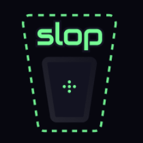
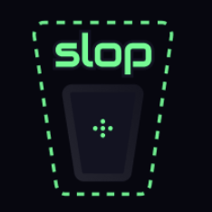

Make APIs Accessible for AI Codegen
OpenAPI-Search combines multiple OpenAPIs in a fast, organized, and searchable interface, making API discovery effortless for developers and AI agents.
curl https://openapisearch.com/providers.json
{
"providers": {
"notion": {
"openapiUrl": "https://api.notion.com/v1/openapi.json"
},
"wakatime": {
"openapiUrl": "https://openapi.wakatime.com/openapi.json"
},
...
}
}
Powered by
 

// Why OpenAPI Search?
Discovery
Find the right API for your needs through a searchable, well-organized interface.
AI-Friendly
Design optimized for AI agents to easily navigate and utilize for code generation.
Open by Default
Promote open standards and keep APIs accessible, not locked behind commercial gateways.